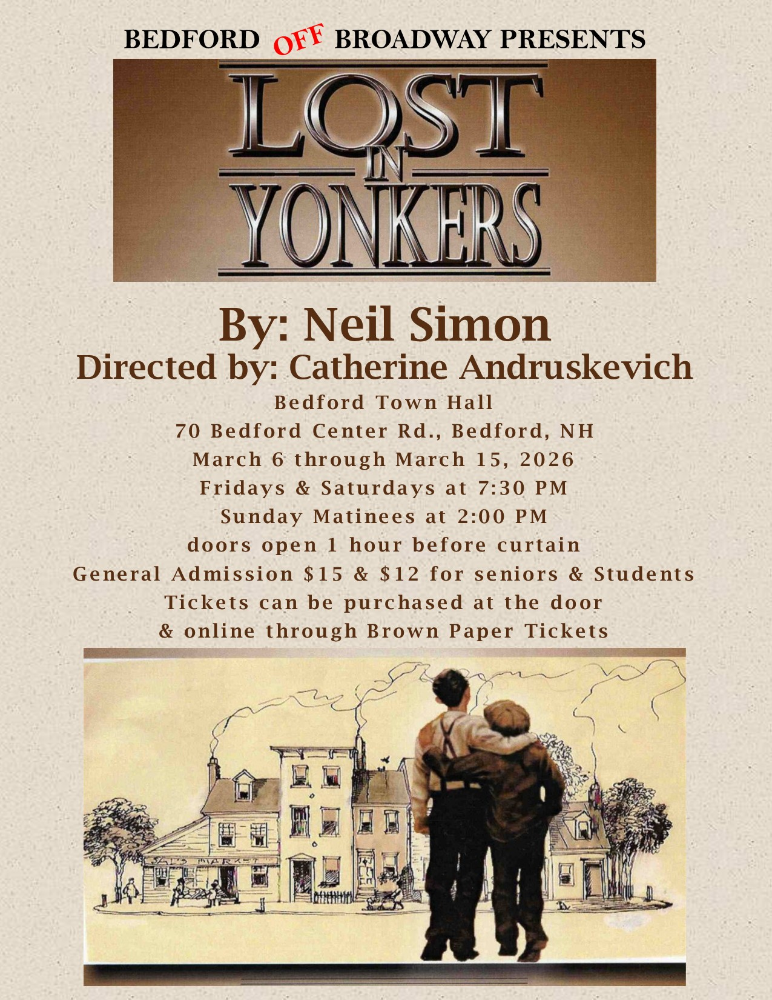

From the North: Follow I-293 South to the Bedford exit which is Route 101 West,
From the South: Follow I-93 North or the Everett Turnpike to the Bedford exit which is Route 101 west.
From the East: Follow Route 101 West to Bedford.
From All Three Directions: At the first traffic light on Route 101 West(the intersection with Route 114), turn left and continue to follow 101 West to the third traffic light. Turn right onto Meetinghouse Road. The Old Town Hall will be on your right at the next intersection at Bedford Center Road.
From the West: Follow Route 101 east to Meetinhouse Road. Turn left at the traffic light onto Meetinghouse Road. The Old Town Hall will be on your right at the next intersection at Bedford Center Road.
Rehearsals are under way for:
Lost In Yonkers

Starting Times: Fri & Sat 7:30pm Sundays 2pm Bedford Off Broadway (a NH non-profit Community Theater Company) is happy to announce auditions for their 2026 winter show "Lost in Yonkers" written by Neil Simon have been completed. The play will be directed by Catherine Andruskevich and stage managed by Pat Napolitano. "Lost in Yonkers" delves into themes of family, love, loss, and resilience. The characters are richly developed, showcasing the complexities of familial relationships. Grandma Kurnitz embodies tough love, having built a protective shell around herself due to her past traumas. The play highlights the struggles of each character, particularly the boys, as they learn valuable life lessons about responsibility and the importance of family bonds. Characters: JAY, 15 & ARTY, 13, Jay's brother. The boys are well behaved for their father and get along with each other. Sort of Wally and Beaver. EDDIE, 40s, the boys' father in desperate financial difficulties seeking Grandma's help with the boys. BELLA, mid-30s, the boys' aunt; childlike developmentally, but not childish, sweet and excitable. GRANDMA to the boys, 70s, angry old woman, very stern and unyielding. LOUIE, 30-40s, the boy’s uncle, secretive, probably on the run from the mob. GERT, late 30s, the boy’s aunt, sweet and likeable but with an unusual speech "tick", likely psychosomatic. Please contact Catherine (cathandrus@gmail.com) with any questions or concerns. Lost In Yonkers by Neil Simon Winter-3/6/26 through 3/15/26 During the 1940s, Jay and Arty find their lives turned upside down when their father moves south for work, leaving them with their no-nonsense grandmother and their loving but absent-minded spinster aunt, Bella. Love . . . Or Best Offer by Phil Olsen Spring-6/5/26 through 6/14/26 Meet Cheryl, who's been a widow for two years and Stan, the fresh divorcee. Their friends Lori and Dave, seeing their struggles with awful blind dates, decide it's time for a digital dating intervention. That's when they all dive into the crazy world of "Friends, Love, or Whatever," a new dating website for the "over 50" club. Crimes of the Heart by Beth Henley 11/6/26 through 11/15/26 The tragicomedy relates the story of the three Magrath sisters, Meg, Babe, and Lenny, who reunite at Old Granddaddy's home in Hazlehurst, Mississippi, after Babe shoots her abusive husband. The sisters were raised in a dysfunctional family with a penchant for ugly predicaments. Each has endured her share of hardship and misery. Past resentments bubble to the surface as each sister is forced to face the consequences of their “crimes of the heart”.
PLEASE NOTE: All shows are subject to change
You can follow us on Facebook
Or email us at BedfordOffBroadway@comcast.net tobe added to our email list for updates If you would like to be added to our mailing list or to our email list to receive advance notices of auditions andupcoming plays, please email us at:

Auditions:
Coming Attractions:
Contact Us
Bedford Off Broadway
3 Meetinghouse Road
P.O. Box 10321
Bedford, New Hampshire 03110